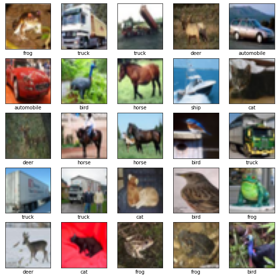
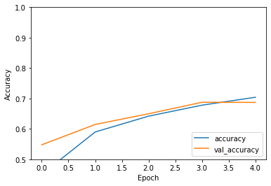
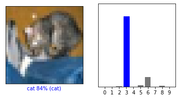
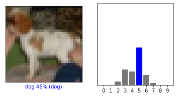
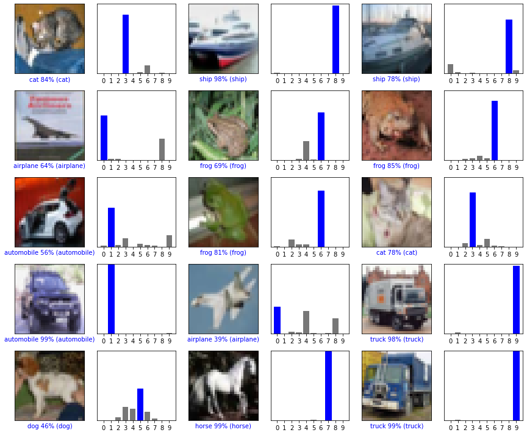

30.7. Demo: Image recognition with Convolutional Neural Networks#
Copyright 2019 The TensorFlow Authors.
#@title Licensed under the Apache License, Version 2.0 (the "License");
# you may not use this file except in compliance with the License.
# You may obtain a copy of the License at
#
# https://www.apache.org/licenses/LICENSE-2.0
#
# Unless required by applicable law or agreed to in writing, software
# distributed under the License is distributed on an "AS IS" BASIS,
# WITHOUT WARRANTIES OR CONDITIONS OF ANY KIND, either express or implied.
# See the License for the specific language governing permissions and
# limitations under the License.
Convolutional Neural Network (CNN)#
|
|
|
 View source on GitHub
View source on GitHub
|
|
This tutorial demonstrates training a simple Convolutional Neural Network (CNN) to classify CIFAR images. Because this tutorial uses the Keras Sequential API, creating and training our model will take just a few lines of code.
Import TensorFlow#
from __future__ import absolute_import, division, print_function, unicode_literals
try:
# %tensorflow_version only exists in Colab.
%tensorflow_version 2.x
except Exception:
pass
import tensorflow as tf
from tensorflow.keras import datasets, layers, models
import matplotlib.pyplot as plt
Download and prepare the CIFAR10 dataset#
The CIFAR10 dataset contains 60,000 color images in 10 classes, with 6,000 images in each class. The dataset is divided into 50,000 training images and 10,000 testing images. The classes are mutually exclusive and there is no overlap between them.
(train_images, train_labels), (test_images, test_labels) = datasets.cifar10.load_data()
# Normalize pixel values to be between 0 and 1
train_images, test_images = train_images / 255.0, test_images / 255.0
Verify the data#
To verify that the dataset looks correct, let’s plot the first 25 images from the training set and display the class name below each image.
class_names = ['airplane', 'automobile', 'bird', 'cat', 'deer',
'dog', 'frog', 'horse', 'ship', 'truck']
plt.figure(figsize=(10,10))
for i in range(25):
plt.subplot(5,5,i+1)
plt.xticks([])
plt.yticks([])
plt.grid(False)
plt.imshow(train_images[i], cmap=plt.cm.binary)
# The CIFAR labels happen to be arrays,
# which is why you need the extra index
plt.xlabel(class_names[train_labels[i][0]])
plt.show()

Create the convolutional base#
The 6 lines of code below define the convolutional base using a common pattern: a stack of Conv2D and MaxPooling2D layers.
As input, a CNN takes tensors of shape (image_height, image_width, color_channels), ignoring the batch size. If you are new to these dimensions, color_channels refers to (R,G,B). In this example, you will configure our CNN to process inputs of shape (32, 32, 3), which is the format of CIFAR images. You can do this by passing the argument input_shape to our first layer.
model = models.Sequential()
model.add(layers.Conv2D(32, (3, 3), activation='relu', input_shape=(32, 32, 3)))
model.add(layers.MaxPooling2D((2, 2)))
model.add(layers.Conv2D(64, (3, 3), activation='relu'))
model.add(layers.MaxPooling2D((2, 2)))
model.add(layers.Conv2D(64, (3, 3), activation='relu'))
Let’s display the architecture of our model so far.
model.summary()
Model: "sequential"
_________________________________________________________________
Layer (type) Output Shape Param #
=================================================================
conv2d (Conv2D) (None, 30, 30, 32) 896
_________________________________________________________________
max_pooling2d (MaxPooling2D) (None, 15, 15, 32) 0
_________________________________________________________________
conv2d_1 (Conv2D) (None, 13, 13, 64) 18496
_________________________________________________________________
max_pooling2d_1 (MaxPooling2 (None, 6, 6, 64) 0
_________________________________________________________________
conv2d_2 (Conv2D) (None, 4, 4, 64) 36928
=================================================================
Total params: 56,320
Trainable params: 56,320
Non-trainable params: 0
_________________________________________________________________
Above, you can see that the output of every Conv2D and MaxPooling2D layer is a 3D tensor of shape (height, width, channels). The width and height dimensions tend to shrink as you go deeper in the network. The number of output channels for each Conv2D layer is controlled by the first argument (e.g., 32 or 64). Typically, as the width and height shrink, you can afford (computationally) to add more output channels in each Conv2D layer.
Add Dense layers on top#
To complete our model, you will feed the last output tensor from the convolutional base (of shape (3, 3, 64)) into one or more Dense layers to perform classification. Dense layers take vectors as input (which are 1D), while the current output is a 3D tensor. First, you will flatten (or unroll) the 3D output to 1D, then add one or more Dense layers on top. CIFAR has 10 output classes, so you use a final Dense layer with 10 outputs and a softmax activation.
model.add(layers.Flatten())
model.add(layers.Dense(64, activation='relu'))
model.add(layers.Dense(10, activation='softmax'))
Here’s the complete architecture of our model.
model.summary()
Model: "sequential"
_________________________________________________________________
Layer (type) Output Shape Param #
=================================================================
conv2d (Conv2D) (None, 30, 30, 32) 896
_________________________________________________________________
max_pooling2d (MaxPooling2D) (None, 15, 15, 32) 0
_________________________________________________________________
conv2d_1 (Conv2D) (None, 13, 13, 64) 18496
_________________________________________________________________
max_pooling2d_1 (MaxPooling2 (None, 6, 6, 64) 0
_________________________________________________________________
conv2d_2 (Conv2D) (None, 4, 4, 64) 36928
_________________________________________________________________
flatten (Flatten) (None, 1024) 0
_________________________________________________________________
dense (Dense) (None, 64) 65600
_________________________________________________________________
dense_1 (Dense) (None, 10) 650
=================================================================
Total params: 122,570
Trainable params: 122,570
Non-trainable params: 0
_________________________________________________________________
As you can see, our (3, 3, 64) outputs were flattened into vectors of shape (576) before going through two Dense layers.
Compile and train the model#
Note The training of the model can take some time (depending on the power of your computer).
model.compile(optimizer='adam',
loss='sparse_categorical_crossentropy',
metrics=['accuracy'])
history = model.fit(train_images, train_labels, epochs=5,
validation_data=(test_images, test_labels))
Epoch 1/5
1563/1563 [==============================] - 50s 32ms/step - loss: 1.5135 - accuracy: 0.4504 - val_loss: 1.2607 - val_accuracy: 0.5476
Epoch 2/5
1563/1563 [==============================] - 60s 38ms/step - loss: 1.1570 - accuracy: 0.5898 - val_loss: 1.0883 - val_accuracy: 0.6145
Epoch 3/5
1563/1563 [==============================] - 64s 41ms/step - loss: 1.0094 - accuracy: 0.6418 - val_loss: 1.0038 - val_accuracy: 0.6497
Epoch 4/5
1563/1563 [==============================] - 66s 42ms/step - loss: 0.9154 - accuracy: 0.6780 - val_loss: 0.9063 - val_accuracy: 0.6875
Epoch 5/5
1563/1563 [==============================] - 73s 46ms/step - loss: 0.8399 - accuracy: 0.7040 - val_loss: 0.9099 - val_accuracy: 0.6871
Evaluate the model#
plt.plot(history.history['accuracy'], label='accuracy')
plt.plot(history.history['val_accuracy'], label = 'val_accuracy')
plt.xlabel('Epoch')
plt.ylabel('Accuracy')
plt.ylim([0.5, 1])
plt.legend(loc='lower right')
test_loss, test_acc = model.evaluate(test_images, test_labels, verbose=2)
313/313 - 3s - loss: 0.9099 - accuracy: 0.6871

print(test_acc)
0.6870999932289124
Our simple CNN has achieved a test accuracy of over around 70%. Not bad for a few lines of code! For another CNN style, see an example using the Keras subclassing API and a tf.GradientTape here.
Making predictions#
from https://www.tensorflow.org/tutorials/keras/classification
# Helper libraries
import numpy as np
import matplotlib.pyplot as plt
Make predictions#
With the model trained, you can use it to make predictions about some images.
predictions = model.predict(test_images)
Here, the model has predicted the label for each image in the testing set. Let’s take a look at the first prediction:
predictions[0]
array([1.6858752e-03, 1.6222546e-04, 4.9888561e-03, 8.4230685e-01,
7.5447030e-04, 2.0084806e-02, 1.1800880e-01, 1.0761167e-05,
1.1810401e-02, 1.8694594e-04], dtype=float32)
A prediction is an array of 10 numbers. They represent the model’s “confidence” that the image corresponds to each of the 10 different articles of clothing. You can see which label has the highest confidence value:
np.argmax(predictions[0])
3
So, the model is most confident that this image is an ankle boot, or class_names[9]. Examining the test label shows that this classification is correct:
test_labels[0]
array([3], dtype=uint8)
Graph this to look at the full set of 10 class predictions.
def plot_image(i, predictions_array, true_label, img):
predictions_array, true_label, img = predictions_array, true_label[i], img[i]
plt.grid(False)
plt.xticks([])
plt.yticks([])
plt.imshow(img, cmap=plt.cm.binary)
predicted_label = np.argmax(predictions_array)
if predicted_label == true_label:
color = 'blue'
else:
color = 'red'
plt.xlabel("{} {:2.0f}% ({})".format(class_names[predicted_label],
100*np.max(predictions_array),
class_names[true_label]),
color=color)
def plot_value_array(i, predictions_array, true_label):
predictions_array, true_label = predictions_array, true_label[i]
plt.grid(False)
plt.xticks(range(10))
plt.yticks([])
thisplot = plt.bar(range(10), predictions_array, color="#777777")
plt.ylim([0, 1])
predicted_label = np.argmax(predictions_array)
thisplot[predicted_label].set_color('red')
thisplot[true_label].set_color('blue')
Let’s look at the 0th image, predictions, and prediction array. Correct prediction labels are blue and incorrect prediction labels are red. The number gives the percentage (out of 100) for the predicted label.
i = 0
plt.figure(figsize=(6,3))
plt.subplot(1,2,1)
plot_image(i, predictions[i], test_labels.reshape(-1), test_images)
plt.subplot(1,2,2)
plot_value_array(i, predictions[i], test_labels.reshape(-1))
plt.show()

i = 12
plt.figure(figsize=(6,3))
plt.subplot(1,2,1)
plot_image(i, predictions[i], test_labels.reshape(-1), test_images)
plt.subplot(1,2,2)
plot_value_array(i, predictions[i], test_labels.reshape(-1))
plt.show()

Let’s plot several images with their predictions. Note that the model can be wrong even when very confident.
# Plot the first X test images, their predicted labels, and the true labels.
# Color correct predictions in blue and incorrect predictions in red.
num_rows = 5
num_cols = 3
num_images = num_rows*num_cols
plt.figure(figsize=(2*2*num_cols, 2*num_rows))
for i in range(num_images):
plt.subplot(num_rows, 2*num_cols, 2*i+1)
plot_image(i, predictions[i], test_labels.reshape(-1), test_images)
plt.subplot(num_rows, 2*num_cols, 2*i+2)
plot_value_array(i, predictions[i], test_labels.reshape(-1))
plt.tight_layout()
